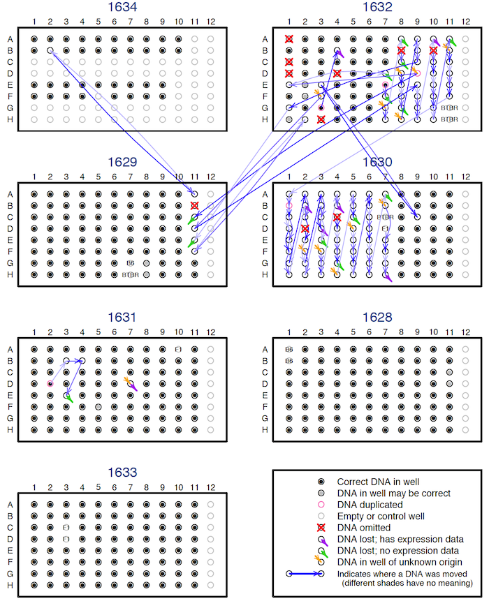

Broman KW, Keller MP, Broman AT, Kendziorski C, Yandell BS, Sen
Ś, Attie AD (2015) Identification and correction of sample
mix-ups in expression genetic data: A case study. G3
5:2177-2186



Figure 7. — The DNA sample mix-ups on the seven 96-well plates used for genotyping. Black dots indicate that the correct DNA was put in the well. Blue arrows point from where a sample should have been placed to where it was actually placed; the different shades of blue convey no meaning. Red X’s indicate DNA samples that were omitted. Orange arrowheads indicate wells with incorrect samples, but the sample placed there is of unknown origin. Purple and green arrow-heads indicate cases where the sample placed in the well was incorrect, but the DNA that was supposed to be there was not found; with the purple cases, there was corresponding gene expression data, while for the green cases, there was no corresponding gene expression data. Pink circles (e.g., well D02 on plate 1631) indicate sample duplicates. Gray dots indicate that the sample placed in the well cannot be verified, as there was no corresponding gene expression data. Gray circles indicate controls or unused wells.